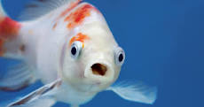
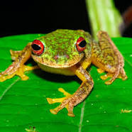
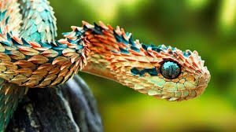

Vertebrata
- Pengertian Vertebrata
- Contoh Hewan Vertebrata
- Ciri-Ciri Hewan Vertebrata
- Klasifikasi Hewan Vertebrata
Pengertian Vertebrata
Hewan Vertebrata adalah hewan yang memiliki tulang belakang.
Dalam klasifikasi makhluk hidup, Vertebrata termasuk dalam subfilum dari chordata dan berakhir di kingdom animalia
Kembali ke atas
Contoh Hewan Vertebrata



Kembali ke atas
Ciri-Ciri Hewan Vertebrata
- Telah memiliki tulang belakang sejati
- Memiliki otak yang sudah berkembang dengan baik
- Sebagian besar memiliki tubuh dan kepala yang terpisah
- Memiliki kerangka yang disebut 'endoskeleton'
- Ukuran tubuh bervariasi
- Mempunyai alat gerak aktif
- Memiliki alat pencernaan yang lengkap
- Memiliki sistem peredaran darah tertutup
Kembali ke atas
Klasifikasi Hewan Vertebrata
- Ikan
- Patin
- Gurami
- Mujair
- Amfibi
- Ordo Amura
- Katak Hijau
- Katak Darat
- Katak Ungu
- Ordo Urodela
- Reptil
- Buaya
- Ular Kobra
- Penyu
Kembali ke atas